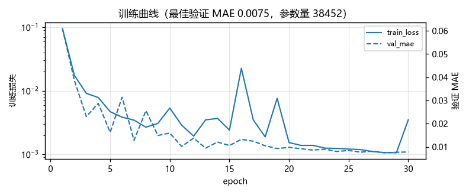
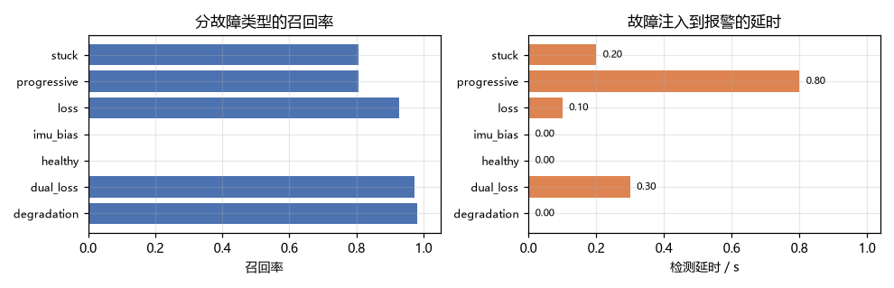
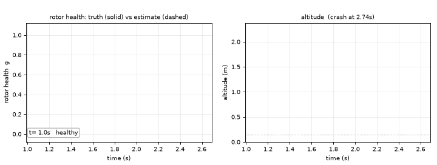

无人机桨故障健康度估计
本模块用机载 IMU 与控制器指令实时估计四旋翼每个桨还剩多少推力权限，对应课程任务② 中"传感器感知"的部分：把"飞机坏没坏、坏得多重"变成可以喂给上层控制器的连续量。
它和「无人机执行器故障注入与控制退化观测」是一对：前者负责 把故障造出来并量化有多致命，本模块负责在坠机之前把故障认出来。
本模块不做容错控制
输出只有四维健康度 ĝ ∈ (0, 1]⁴，不直接改桨速。怎么用这四维去做控制分配是下一个模块的事。
这样切分的好处是：检测器的好坏可以单独用 MAE、召回率、检测延时间来评价，
不需要和某个具体控制律绑在一起。
1. 问题：只有 0.64 秒
悬停 1.5 m 时四条旋翼总推力约等于重力，单桨承担 25%。某条桨突然停转，剩余三桨即使按原指令 出力，合力方向也会立刻偏斜，同时产生无法抵消的滚转力矩。实测从注入故障到触地只有 0.64 s （见故障注入模块的对比表）。
要在那 0.64 s 里做出反应，控制器必须先用传感器数据回答三个问题：哪一桨、坏到什么程度、 多久之前坏的。靠姿态误差过阈值判断做不到：
- 推力衰减 40% 时姿态几乎看不出来，但剩余权限已经只有 0.6；
- 桨卡死与完全失效在姿态上表现接近，但前者还给了一个恒定偏置。
所以这里把问题定义成回归而不是分类：对每一桨输出一个 (0, 1] 的连续增益，
分类（坏没坏）只是对它取阈值。
2. 数据流
GeometricController"] -->|"u_cmd（4 桨指令推力）"| B["故障脚本
FaultPlan.gains(t)"] B -->|"g(t)·u_cmd"| C["MuJoCo 四旋翼"] C -->|"qpos / qvel"| D["传感器
IMU 比力 + 角速度"] C -->|"qpos"| E["位置 / 速度"] D --> F["13 维特征"] E --> F A -->|"u_cmd"| F F -->|"滑窗 100 步"| G["1D-CNN + GRU"] G -->|"ĝ（4 维健康度）"| H["上层：容错控制 / 故障迫降"] B -->|"g(t) 真值"| I["指标：MAE / 召回 / 检测延时"] G --> I
模块只做两件事：把一次飞行的全部观测整理成滑窗样本（data.py），以及从滑窗里回归出四桨增益
（model.py + train.py）。动力学、场景、控制器全部复用
MuJoCo 四旋翼仿真底座，一行不改。
3. 特征构建
3.1 机身比力
仿真能直接给出世界系速度，但机载只有加速度计。加速度计测的是"除重力外的比力"， 所以由速度差分反推，再旋到机体系：
静止时无论姿态如何，机体系读数都是 Rᵀ(g ẑ)，这就是自检里"比力方向正确"那一项验证的东西。
3.2 13 维特征
四个指令推力是故障之前控制器想给的推力，除以最大推力归一化到 [0, 1.5]。
这一项是网络能提前报警的关键：故障发生时实际加速度与"按指令本该有的加速度"不符，
这个差值是网络要学的主要线索。没有它，只能等姿态误差积累到明显，会晚得多。
各维量纲差得远，按下面的尺度归一化后送进网络：
| 通道 | 尺度 | 通道 | 尺度 |
|---|---|---|---|
| 比力 x / y | 12 | 速度 x / y | 4 |
| 比力 z | 20 | 速度 z | 3 |
| 角速度 | 6 | 指令推力 | 1（已除 u_max） |
3.3 滑窗与标签
窗口 步（1 s），步长 步。标签取窗口末帧的真值——检测任务关心 "现在这一刻四桨健康度是多少"，而不是这段时间的平均。
按 episode 切分
同一段飞行相邻的窗口高度相关。如果按样本随机切训练/测试，测试集会混进训练集的近邻，
指标会虚高。split_by_episode() 按飞行次数切（8:1:1），保证同一段飞行的窗口只落在一个集合里。
4. 网络与训练
(B, 100, 13)
→ Conv1d(13→32, k5) + BN + ReLU # 提取局部时序模式
→ Conv1d(32→32, k5) + BN + ReLU
→ MaxPool1d(2) # 100 → 50
→ Conv1d(32→48, k3) + BN + ReLU
→ MaxPool1d(2) # 50 → 25
→ GRU(48 → 64) # 记忆更长的依赖
→ 取末隐状态 h_T
→ Linear(64→64) + ReLU + Dropout(0.1)
→ Linear(64→4) + Sigmoid # 四桨健康度
参数量 38452。卷积层负责"这一小段波形正常不正常"，GRU 负责"从正常到异常是怎么过渡的" ——渐进退化靠的就是后者：单帧看什么都正常，只有趋势变了。
损失用故障加权 MSE：
加重故障样本是因为它们只占少数（随机采样里健康样本 22%），不加重的话网络会退化成
"永远输出 1"也能拿到很低的平均误差。优化器 AdamW（lr 2e-3，weight decay 1e-4），
ReduceLROnPlateau(factor=0.5, patience=2)，按验证集 MAE 早停（patience 6）。
5. 源码解析
5.1 features.py：比力与滑窗
def specific_force(vel, prev_vel, dt, quat):
a_world = (np.asarray(vel) - np.asarray(prev_vel)) / dt
f_world = a_world + np.array([0.0, 0.0, GRAVITY])
return quat_to_matrix(quat).T @ f_world
quat_to_matrix 是自带的一份实现（(w, x, y, z) 机体→世界），与底座
core.quadrotor.quat_to_mat 同约定。自带而不 import 底座，是为了让数据集、训练、
纯推理这三件事都能在没装 MuJoCo 的机器上跑。
make_windows 里 ends = np.arange(window - 1, n_steps, stride)，返回
(X, Y, end_index)，第三个输出在算检测延时时用来把样本序号换算回仿真时间。
5.2 data.py：故障脚本
@dataclass(frozen=True)
class FaultPlan:
kind: str # healthy / loss / degradation / stuck / dual_loss / progressive / imu_bias / imu_noise
rotor: int = 0
onset: float = 2.0 # 注入时刻
severity: float = 1.0
ramp: float = 0.0 # 过渡时长，0 表示阶跃
gains(t) 返回当前时刻四桨增益。_alpha(t) 是过渡因子：
四型故障的增益：loss / degradation 为 ，stuck 与 dual_loss 为 ，
progressive 为 ——注意这里的 severity 是衰减速率（1/s），
不是最终增益，0.25 表示 4 s 掉光。
仿真主循环每步做四件事：控制器给出 u_cmd → 乘故障增益 → quad.apply_rotor_thrust() →
quad.step(1)。坠机判据 pos[2] < 0.15，默认 stop_on_crash=True 在触地时截断序列
（再往后飞机穿到地面以下，数据没有意义）。
5.3 model.py：检查点
payload = {
"arch_version": ARCH_VERSION,
"feature_dim": model.feature_dim,
"rotor_count": model.rotor_count,
"arch": {"channels": [...], "gru_hidden": 64, "head_dim": 64, "dropout": 0.1},
"state_dict": model.state_dict(),
"meta": meta, # 特征名 / 窗口 / 步长 / dt / 训练超参 / history
}
结构超参一并存盘，load_checkpoint 才能把换过尺寸的网络读回来（这个 bug 是写单元测试时
撞出来的：早期版本只存了 feature_dim，小网络存进去、按默认尺寸读出来，直接 shape mismatch）。
5.4 train.py：加权损失
def _sample_weights(targets, fault_weight):
faulty = (targets.min(dim=1).values < FAULT_GAIN_THRESHOLD).float()
return 1.0 + (fault_weight - 1.0) * faulty
训练完成后把最佳 epoch、验证 MAE、测试 MAE、参数量、耗时全部写进检查点的 meta，
评测和文档里引用的数字都从这里来，不靠手抄。
5.5 infer.py：在线估计
HealthEstimator 内部维护一个长度 window 的环形缓冲，push(step_features) 每次塞一帧；
缓冲没满返回 None，满了之后每帧返回一个 (4,) 估计。ROS 节点就是每仿真步调一次 push。
5.6 metrics.py：检测延时
"召回率"是在帧级别算的：真值里任意一桨 < 0.9 即为故障帧，估计里任意一桨 < 0.8 即为
报警帧。检测延时从真值第一次低于阈值算起，到估计第一次低于阈值结束：
一直不报警返回 inf，全程没有故障返回 nan——两者在报告里分别是 n/a 和 –。
6. 运行步骤
6.1 安装依赖
pip install -r requirements.txt # torch / numpy / mujoco / matplotlib / pillow
torch 装 CPU 版即可：
pip install torch --index-url https://download.pytorch.org/whl/cpu
6.2 不用 ROS 直接跑
权重 results/detector.pt（167 KB）随仓库提交，所以 clone 下来就能直接评测、出图：
python main.py --selftest # 51 项自检
python main.py --eval test # 用仓库里的权重
python main.py --demo results/detection_demo.gif
要复现训练再跑这两步（CPU 约 26 s + 52 s）：
python main.py --gen-data results/detector_dataset.npz --episodes 240
python main.py --train --threads 8
数据集 7 MB 不入库（见 results/.gitignore），权重和指标 json/csv 入库。缺文件时命令行会
直接打印上面这两条补救命令，不会只抛 FileNotFoundError。
Windows / Ubuntu 都能跑，main.bat / main.sh 是等价入口。
6.3 ROS2 Humble 启动
colcon build --packages-select uav_mujoco_sim uav_rotor_fault_detector_nn --parallel-workers 4
source install/setup.bash
ros2 launch uav_rotor_fault_detector_nn detector.launch.py
节点内部闭环仿真并在线估计，同时把真值 /uav/health_true 和估计 /uav/health_est 发出来，
方便在 rviz2 / rqt 里直接对照。换故障类型：
ros2 launch uav_rotor_fault_detector_nn detector.launch.py \
fault:=degradation rotor:=2 severity:=0.4 duration:=12.0
参数分两层，避免"两处都能改同一项"的歧义：config/detector.yaml 是默认值真源（13 个参数全在
里面，顶层用 /** 通配节点名），detector.launch.py 只把最常改的 6 个（scene / fault /
rotor / onset / severity / duration）做成 launch argument 覆盖同名项；seed / dt /
substeps / imu_noise / checkpoint / window / publish_rate 只改 yaml 或用
--ros-args -p 名字:=值。节点按 cwd → 包目录 → 安装后的 share 目录依次找 checkpoint，
所以 ros2 launch 从任意目录启动都能加载权重。
话题表见 模块 README。
7. 实验结果
数据集：240 次飞行（4 种物理场景 × 8 类故障随机组合），11600 个滑窗样本，其中 140 次坠机。 训练 30 epoch，最佳 epoch 28，验证 MAE 0.0075，参数量 38452。
测试集（按飞行切分，1039 个样本）：
| 故障类型 | 样本 | MAE | 召回 | 误报 | 检测延时/s |
|---|---|---|---|---|---|
| 单桨推力衰减 | 169 | 0.010 | 0.980 | 0.000 | 0.000 |
| 双桨失效 | 138 | 0.019 | 0.974 | 0.000 | 0.300 |
| 健康 | 142 | 0.004 | – | 0.000 | – |
| IMU 零偏 | 213 | 0.003 | – | 0.000 | – |
| 单桨完全失效 | 152 | 0.009 | 0.929 | 0.000 | 0.100 |
| 渐进退化 | 121 | 0.008 | 0.806 | 0.000 | 0.800 |
| 桨卡死 | 104 | 0.011 | 0.806 | 0.000 | 0.200 |
整体：召回率 0.910、精确率 1.000、误报率 0.000、准确率 0.976， 混淆矩阵 TP=253 FP=0 TN=761 FN=25。


动图：左侧四桨真值（实线）与估计（虚线），竖线是故障注入时刻与报警时刻； 右侧是高度曲线，说明"必须在坠地之前报出来"。

几点解读：
- 单桨完全失效延时 0.10 s，而坠地只剩 0.64 s，留给容错控制约 0.5 s 的窗口；
- 渐进退化延时最长（0.80 s），因为早期每秒只掉 20% 推力，单帧变化小于噪声幅度， 必须等趋势积累出来。这是信息量本身的限制，不是网络容量不够；
- 误报率 0，健康飞行与 IMU 零偏两种情况都没有报警。这两类样本占了测试集三分之一， 却一次都没误报，说明网络没有简单地把"姿态抖"当成故障；
- 双桨失效 MAE 最大（0.019），因为两桨同时掉时剩余两桨已经无法维持姿态， 飞机会翻滚，特征分布与训练集里的悬停工况偏离较远。
8. 局限与后续
- 数据来自仿真。IMU 噪声按白噪声建模，真实机架的振动、桨叶损伤机理不同， 迁移到实机需要重新标定噪声模型，必要时做域随机化。
- 只估计推力权限，不区分故障类型。桨卡死和完全失效在增益上都表现为 0； 要区分需要电调反馈（电流/转速），本仿真没有这一路信息。
- 依赖指令推力。真实机载系统里这个量在飞控内部，需要额外透传， 或者改成本模块的接口只吃 IMU（代价是延时会变大）。
- 单机、悬停为主。机动飞行下比力与姿态耦合更强，特征分布会漂移， 目前的数据生成里目标点随机在 2.5 m 半径内，覆盖有限。
- 下一步：把
ĝ接进加权控制分配（uav_neural_fault_tolerant_control）， 以及故障迫降时用深度图找可降落区域（uav_fault_emergency_landing）。
9. 参考
- Mueller, M. W., D'Andrea, R. Stability and control of a quadrocopter despite the complete loss of one, two, or three propellers. IEEE International Conference on Robotics and Automation (ICRA), 2014.
- Zhang, Y., et al. Learning-based fault diagnosis for rotorcraft: a review.（综述：基于学习的旋翼飞行器故障诊断）
- 李航. 统计学习方法（第 2 版）. 清华大学出版社, 2019.（CNN / GRU / 加权损失的推导）
uav_actuator_fault_sim：故障注入与评测台，本模块的数据来源（该模块正在另一个 PR 中评审， 合并后两篇文档可以互相链接）- uav_mujoco_sim：MuJoCo 四旋翼仿真与 ROS2 桥接底座